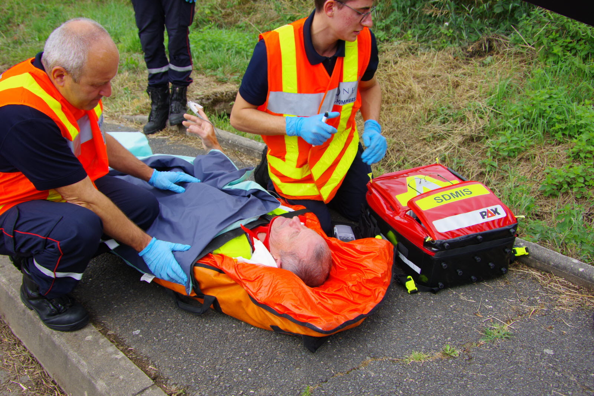
SECOURIR✚01 — URGENCE
Secours à personne
Porter assistance aux personnes et leur apporter les premiers gestes de secours.
↗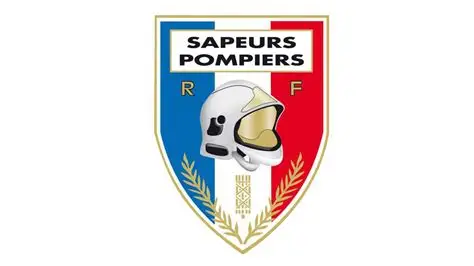
PASSIONDécouvrir un univers d'engagement, de courage
et d'esprit d'équipe.
Bienvenue sur Passion Sapeur-Pompier
Ce site permet de découvrir l’univers des sapeurs-pompiers, leur métier, leurs missions, leurs véhicules, leur matériel et leur formation.
Une rubrique est également consacrée aux Jeunes Sapeurs-Pompiers (JSP) afin de présenter leur formation, les différentes activités, les entraînements, les connaissances acquises et les valeurs transmises.
Engagement, courage, solidarité et esprit d’équipe sont au cœur de l’univers des sapeurs-pompiers.
Explorer l’univers JSP ↗Protéger, secourir, prévenir. Au quotidien, les sapeurs-pompiers s’adaptent à toutes les situations.

SECOURIR✚Porter assistance aux personnes et leur apporter les premiers gestes de secours.
↗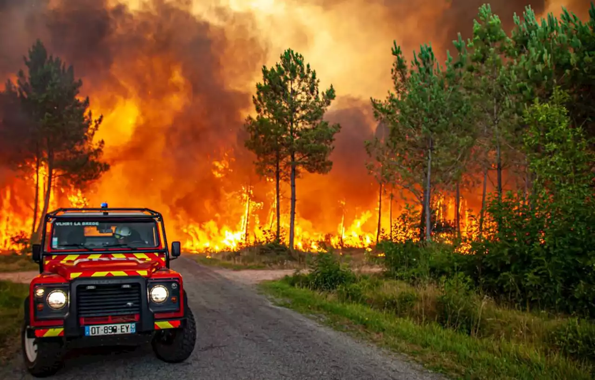
PROTÉGER♨Maîtriser les incendies et protéger les personnes, les biens et l’environnement.
↗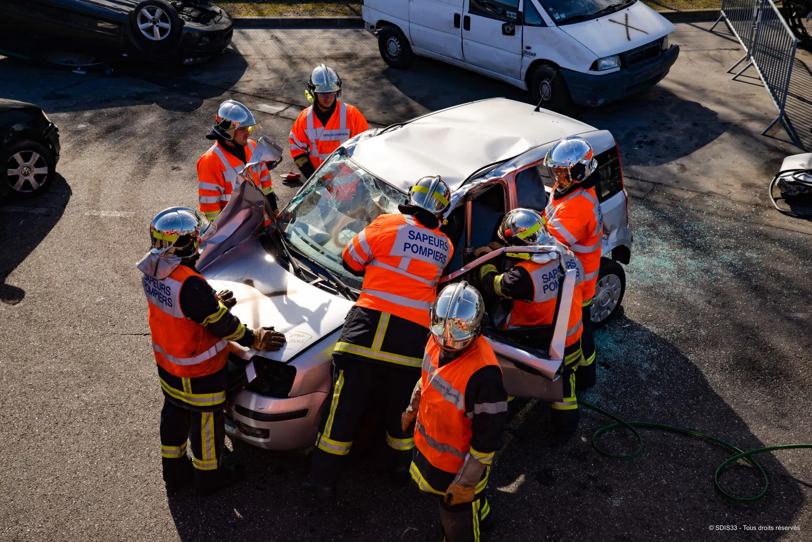
INTERVENIR⌁Sécuriser les lieux et porter secours aux personnes impliquées.
↗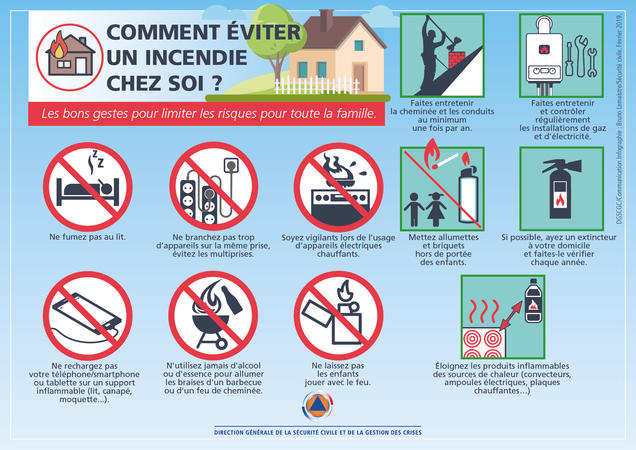
ANTICIPER◉Informer, conseiller et préparer chacun pour mieux éviter les accidents.
↗Apprendre les gestes qui sauvent, se dépasser et grandir ensemble. Découvrez le parcours des JSP et complétez cette rubrique avec l’expérience de votre section.
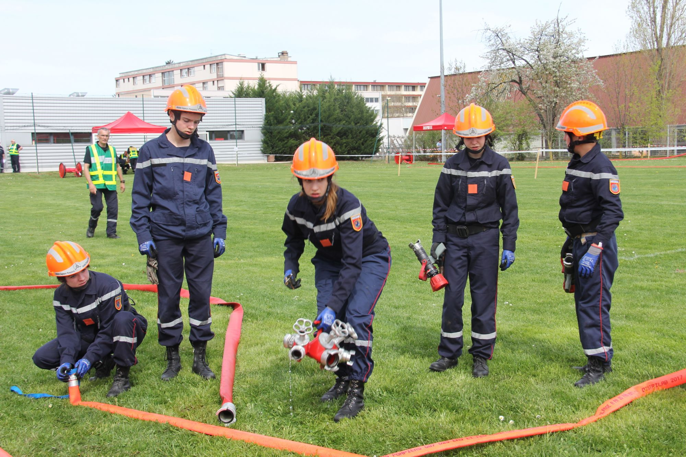
Les Jeunes Sapeurs-Pompiers découvrent les valeurs et les savoir-faire du monde des sapeurs-pompiers. Ce site vous laisse la place de raconter votre propre parcours.
Explorer le parcours ↓Les Jeunes Sapeurs-Pompiers (JSP) découvrent le monde des sapeurs-pompiers. Ils apprennent les gestes de secours, la prévention des risques et le travail en équipe. Les entraînements développent la discipline et l’esprit de solidarité. Cette formation prépare les jeunes qui souhaitent devenir sapeurs-pompiers.
LES JSPPour devenir JSP, il faut avoir entre 11 et 18 ans, être disponible le mercredi et/ou le samedi après-midi selon les centres, fournir un certificat d’aptitude physique et bénéficier d’une autorisation parentale.
INSCRIPTIONLes détections comprennent des épreuves sportives et des épreuves écrites.
SPORT & ÉCRITUtilisez ces blocs comme trame éditoriale et ajoutez vos expériences.
Selon les départements, le parcours JSP dure 3 ou 4 ans.
Des activités sportives sont proposées pendant les 3 ou 4 années de formation, selon le département.
Lot de sauvetage, premiers secours et manœuvres incendie font partie des apprentissages.
Manipulation des tuyaux, pièces de jonction et échelles, ainsi que les manœuvres incendie.
Au cours du parcours de 3 ou 4 ans, les JSP peuvent préparer le PSC1 et le PSC2.
Découvrez les équipements utilisés pour les exercices, les secours et les manœuvres.
Découvrez les grades JSP et les diplômes du parcours. Touchez l’image pour l’agrandir.
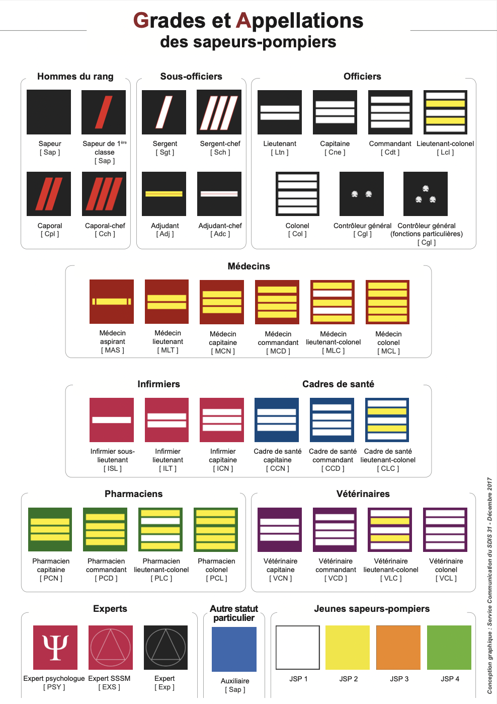
Je suis Jeune Sapeur-Pompier depuis quelque temps. J’apprends les gestes de secours, la sécurité et le travail en équipe. Les entraînements me font découvrir le métier. Cette expérience m’aide à devenir plus sérieux et responsable et confirme mon envie de devenir sapeur-pompier professionnel.

Comment se déroule une séance dans votre centre ? Ajoutez votre programme, vos photos et vos impressions : cette partie est à construire avec votre vécu.
Pour personnaliser la rubrique JSP, remplacez les textes « À compléter » et les cadres « Votre photo ici » par vos contenus. Retrouvez l’emplacement de chaque photo dans assets/images/README.md.
Une diversité d’interventions qui nécessite engagement, préparation et travail d’équipe.
Feux de bâtiment, de véhicule ou d’habitation.
DÉCOUVRIR ↗Assistance et premiers secours aux victimes.
DÉCOUVRIR ↗Protection et secours sur la voie publique.
DÉCOUVRIR ↗Intervention en milieu naturel et forestier.
DÉCOUVRIR ↗Protection face aux risques liés à l’eau.
DÉCOUVRIR ↗Mesures de sécurité face aux risques spécifiques.
DÉCOUVRIR ↗Assistance, sécurisation et missions du quotidien.
DÉCOUVRIR ↗Parcourez les véhicules par mission. Les photos pourront être ajoutées au fur et à mesure.
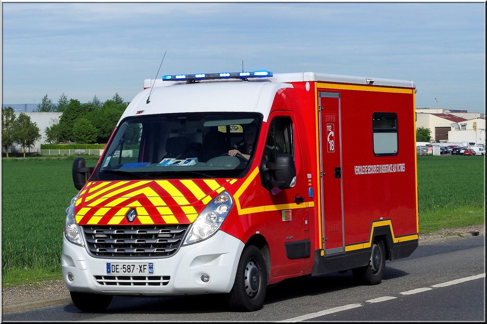
VSAVVéhicule de secours et d’assistance aux victimes
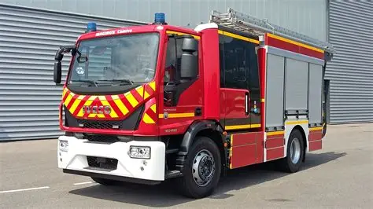
FPTFourgon pompe-tonne
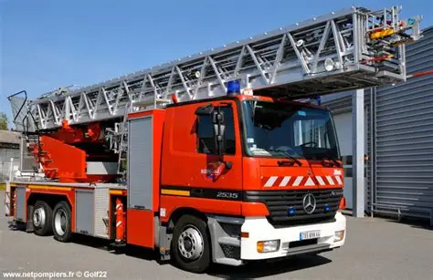
EPAÉchelle pivotante automatique
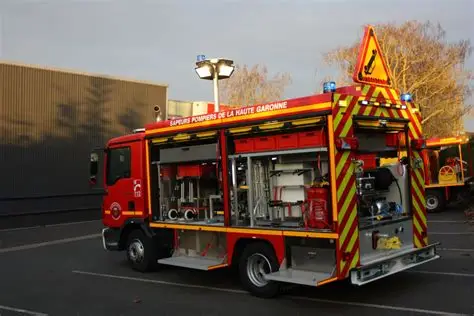
VSRVéhicule de secours routier
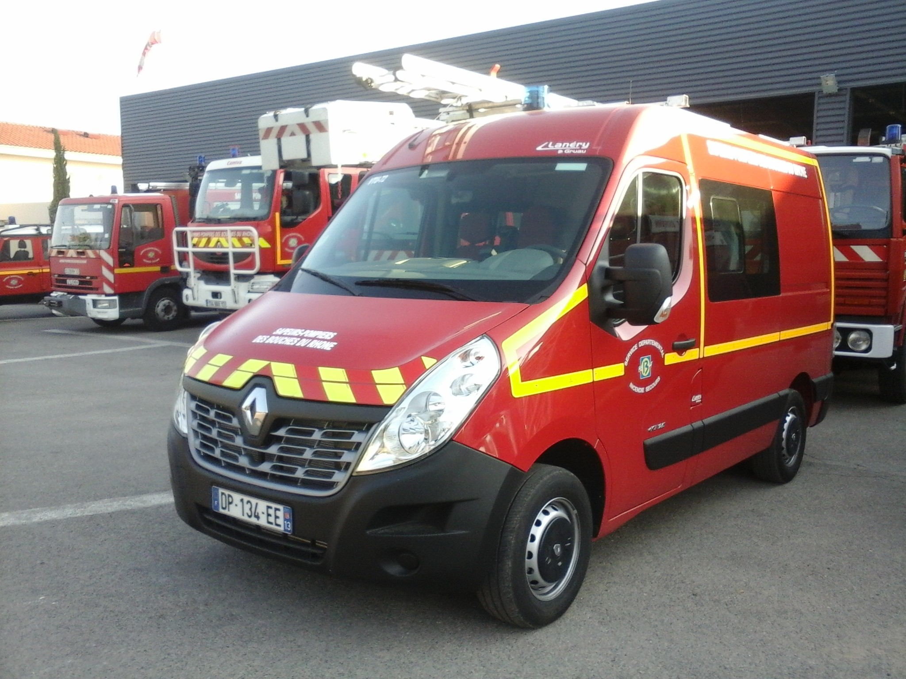
VIDVéhicule d’intervention diverse
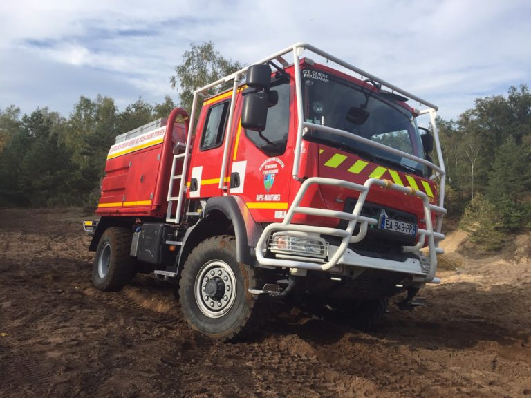
CCFMCamion-citerne feux de forêts moyen
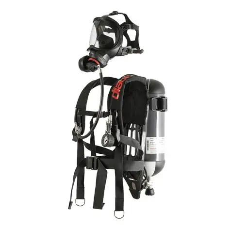
ARIAppareil respiratoire et équipement de protection
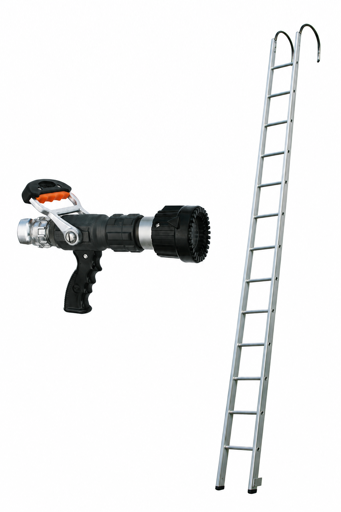
+Ajoutez ici le matériel et les outils de désincarcération.
PHOTOS À PERSONNALISER · VÉHICULES REGROUPÉS PAR MISSION
Les grades permettent de distinguer les niveaux d’expérience et de responsabilité chez les sapeurs-pompiers.
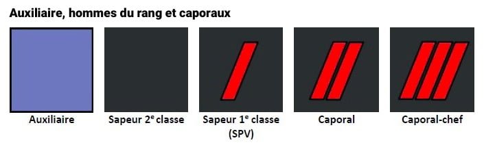
HOMMES DU RANG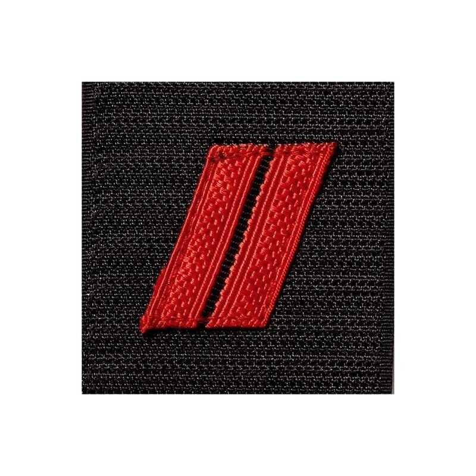
INSIGNE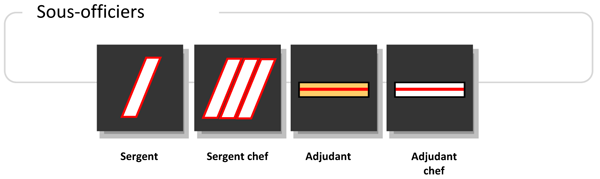
ENCADREMENT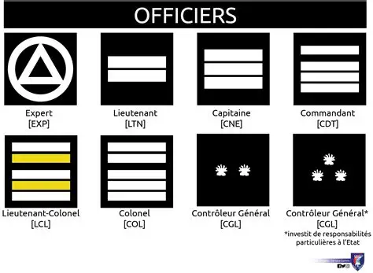
COMMANDEMENTLes grades et insignes peuvent varier selon le statut et le corps. Ajoutez ici votre présentation et vos visuels de référence.
Plusieurs parcours permettent de découvrir ou d’exercer le métier de sapeur-pompier.
Découvrir les valeurs, l’esprit d’équipe et les apprentissages JSP au fil d’une formation adaptée.
DÉCOUVRIR LA RUBRIQUE JSP ↗Le sapeur-pompier volontaire donne de son temps pour aider les sapeurs-pompiers professionnels. Cet engagement n’est pas rémunéré comme un emploi. Les gardes peuvent durer 12 heures, de jour ou de nuit.
INFORMATIONS OFFICIELLES ↗Le sapeur-pompier professionnel exerce ce métier et perçoit une rémunération. Selon l’organisation du service, les gardes peuvent durer 24 ou 48 heures.
INFORMATIONS OFFICIELLES ↗Testez vos connaissances en quelques questions.